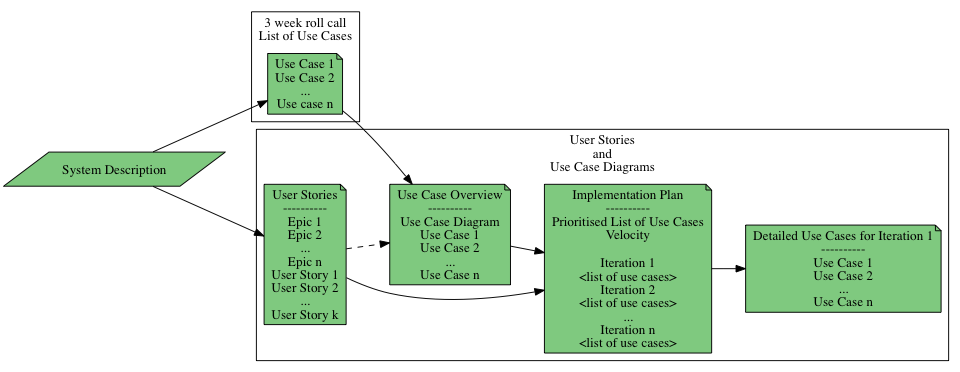
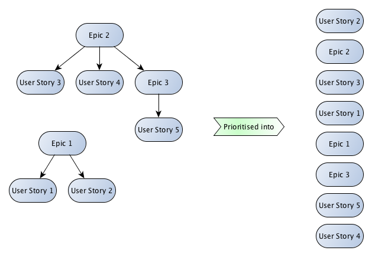
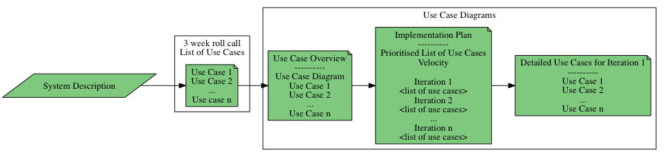
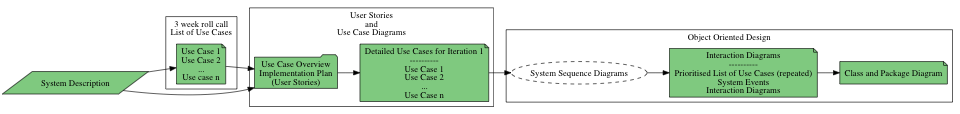
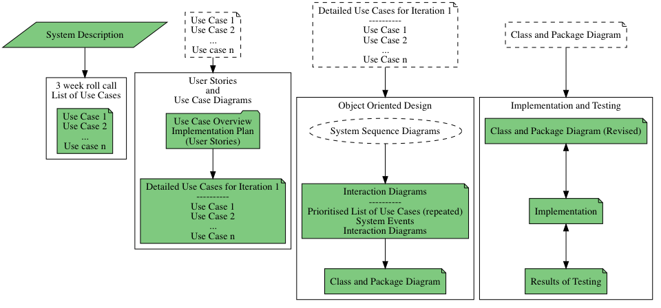
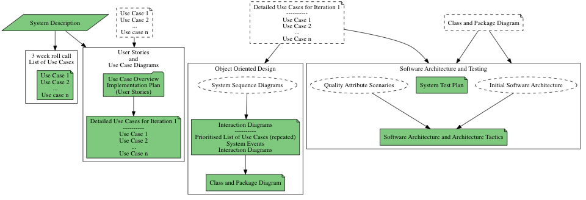

Assignment Map
Table of Contents
- 1. About this Text
- 2. Introduction
- 3. Release Sprints / Assignment Submissions
- 3.1. Release Sprint 0: 3 Week Roll Call; List of Use Cases PA1415 PA1435 PA1443
- 3.2. Release Sprint 1: User Stories and Use Case Diagrams PA1415
- 3.3. Release Sprint 1: Use Case Diagrams PA1435 PA1443
- 3.4. Release Sprint 2: Object Oriented Design PA1415 PA1435 PA1443
- 3.5. Release Sprint 3: Implementation and Testing PA1415 PA1435
- 3.6. Release Sprint 3: Architecture and Testing PA1443
- 4. System Description
1 About this Text
This document briefly describes each of the release sprints and the assignments in the course(s).
2 Introduction
Throughout the course you work with the system described below, under System Description. Using this particular system you will be exposed to all the joys of constructing a software design according to the UML Unified Process.
There are many different steps and diagrams involved in this process. Some of these diagrams you will be asked to submit, but some of these diagrams you will construct as an input and a means to understand what you should do in other diagrams. So have a look at the release sprints to see what you will actually submit as assignments, and make sure that you adjust your effort accordingly.
Aligned with this mass of different diagrams, the assignments are split up into several smaller sprints that culminate in a release sprint where you package what you have done up to that point and submit it to the course management system. An outline of the submissions is presented below.
All assignments are done in teams (See the information about forming groups in Sprint 0), and are submitted as a team on the course management platform.
The three week roll call must, however, be submitted individually.
3 Release Sprints / Assignment Submissions
3.1 Release Sprint 0: 3 Week Roll Call; List of Use Cases PA1415 PA1435 PA1443
The idea with this release sprint is that I should see who is active in the course. I will at the same time take the opportunity to briefly look at your initial efforts regarding the assignment series so that I may possibly steer you in a more productive direction.
A reasonable effort for this assignment is between 1/2 to 1 hour. Just read the system description and brainstorm a list of 5-15 processes that a user may do with the system (i.e. UML use cases). Add one or two sentences describing each of these use cases, package it up in a PDF and submit.
This submission can be seen as a starting point for the next submission where you take this initial list of use cases and continue your analysis, and expand the descriptions of your found use cases.
3.2 Release Sprint 1: User Stories and Use Case Diagrams PA1415
In this release sprint you show what you have done with respect to requirements analysis and object oriented analysis.
This follows two tracks; user stories, and use cases. Note that you are expected to map between them.

Clarification for the user stories With Epics I mean the most high level things that one might be expected to do towards the system. For example, in a game the epics might be to play the game, configure character, and interact with other players (suitably written up as proper user stories, of course). These high level epics may very well be broken down into other epics – equally big, but on a lower level. For example, one might “interact with game objects”. This is still too fuzzy to know how to implement it, so it is an epic, but it is still on a lower level than the “play game” epic.
You then break down the epics into user stories, and now you have a big bag full of both epics and user stories. These are prioritised together. This means that you may get any order in the final prioritised list.

Thus, in Section 3 of your document, you describe only the epics, and in section 4 you present your entire list of prioritised epics and user stories. Please note that in order to be able to follow your reasoning, I would expect you to have links from the user stories back to the epic to which they “belong”. Also, remember that you are only expected to do this for your three most important epics.
Going forward, it is only the use cases in your first iteration that you need to work with in subsequent releases.
3.3 Release Sprint 1: Use Case Diagrams PA1435 PA1443
In this release sprint you show what you have done with respect to requirements analysis and object oriented analysis.
This follows two tracks; user stories, and use cases. Note that you are expected to map between them.

Going forward, it is only the use cases in your first iteration that you need to work with in subsequent releases.
3.4 Release Sprint 2: Object Oriented Design PA1415 PA1435 PA1443
In this assignment you continue working with the use cases you selected for your first iteration, and make interaction diagrams, class diagrams, and package diagrams based on them.
Please note that while I do not ask you to make system sequence diagrams for your use cases, you are still going to have to, on your own, do someting akin to this in order to extract the system events that the actors generate for each use case. These are then the system events that you create your interaction diagrams for.

3.5 Release Sprint 3: Implementation and Testing PA1415 PA1435
In this release sprint you implement and test your design for your first iteration.

3.6 Release Sprint 3: Architecture and Testing PA1443
In this release sprint you design a test strategy for the first iteration of the system you have been designing. You also construct a software architecture for the system. An embryo to this ought to be your class and package diagram; there should be some form of connection between what you have done previously and the architecture created in this assignment, even if we do not explicitly ask you to make a complete mapping down to the design level.
You use the initial software architecture and the quality attribute scenarios you create as input for refining it with the help of the architecture tactics so that the quality attribute scenarios are addressed.
And, at the end of the day, make sure that your test plan still holds for your revised architecture as well.

4 System Description
4.1 Introduction
Warez-R-Us is seeking your help for their next version of their warehouse management system. In particular, they are seeking solutions to the following:
- A visual map of a warehouse floor, so you can directly see where a certain item is stored.
- Enable multiple users to concurrently interact with the same warehouse and eah other.
4.2 Minimal Requirements
Your solution shall at least contaion:
- An opening screen where you can select which warehouse you want to manage.
- A screen where you can enter new goods into the warehouse.
- A map of the warehouse where you can visually see where goods are stored. You can also move goods around by using the cursor keys.
- A live-tracking of where warehouse trucks are located, as well as any goods they are currently moving.
- You shall also be able to select a truck, or a piece of goods and interact with it. For example, you can direct a truck to go to a specific place, you can set the temperature for cold storage goods, or edit any other data available for each goods item (Make reasonable assumptions, for example weight, expiration date, order status etc.).
- There are different types of goods, hierarchically organised. For example, you have
Big-Box, with sub-typecold-storage,hot-storage,soft-box, andhard-box. You also havesmall-items, which can be stacked to form agoods-collection.
- Multi-User
- Users shall be able to concurrently interact with different pieces of goods and trucks. The map shall indicate if an item is currently “locked” for interaction by another user.
- Users skall be able to chat with each other. In this chat they shall be able to easily share information about goods and trucks.
4.3 Map Generation
New warehouse floors are configured through a separate administrator interface. This is not in focus for the assignments in this course, but you should make sure that it is possible for you to create this interface at a later stage. For now, the implication is that you need to load and store a warehouse and its current state to a file.
4.4 Truck Movements
For the same of the assignments in this course, you can assume that trucks move around randomly. They should, however, be prepared so that they can in a future version of the system, acquire their location through an interface.
4.5 Extras
Ideas for the future. We do not expect these extras to be implemented in your version of your system. What we do expect, however, is that you create a design that can easily accommodate these changes, and that you have documented how you would implement them.
- The map may be in three dimensions so that you can have different floors and be able to stack goods on top of each other.
- You may get a first-person view from any point in the warehouse so that you can “see” what goods look like.
- You can also use this first person view to follow trucks through the warehouse.